An Application of Non-parametric Modelling Techniques to Financial Data
Yuning Chen
Rui Liu
Agenda
Topic 1: Motivation
Topic 2: Kernel Density Estimation
Topic 3: Kernel Regression
Topic 4: Regression Splines
Topic 1: Motivation
Data
All data were downloaded from Yahoo Finance using the R package quantmod.The dataset includes daily data on the opening, highest, lowest, and closing prices, along with trading volume.
We use the closing price for our analysis.
In our regression analysis, we use the VIX index as the response variable.
| Variable | Description | Min | Max | Mean | Variance |
|---|---|---|---|---|---|
| Date | - | 2015-01-05 | 2024-10-11 | - | - |
| VIX | Market’s expectation of future volatility based on S&P500 index options, higher value means higher anticipated volatility over the next 30 days | 9.22 | 82.69 | 18.23 | 53.85 |
| Oil | West Texas Intermediate (WTI) Crude Oil future, quoted in U.S. dollar per barrel | -37.63 | 123.7 | 61.79 | 332 |
| Gold | Gold Futures on the COMEX, quoted in U.S. dollar per ounce | 1,051 | 2,670 | 1,578 | 131,279 |
| S&P 500 | Tracks the performance of the 500 of the largest publicly traded companies is the U.S., weighted by market capitalization | 1,859 | 5,815 | 1,578 | 1,042,455 |
| Nikkei | Tracks the performance of the 225 large, publicly teraded companies listed on the Tokyo Stock Exchange, weighted by stock price | 14,952 | 42,224 | 24,494 | 35,633,296 |
| SSE | Shanghai Stock Exchange Composite Index, tracks all A-shares and B-shares listed on the Shanghai Stock Exchange, weighted by market capitalization | 2,483 | 5,166 | 3,914 | 119,747 |
| FTSE | FTSE 100 index, which represents the 100 largest companies listed on the London Stock Exchange, weighted by market capitalization | 4,994 | 8,446 | 7,117 | 355,342 |

Histograms
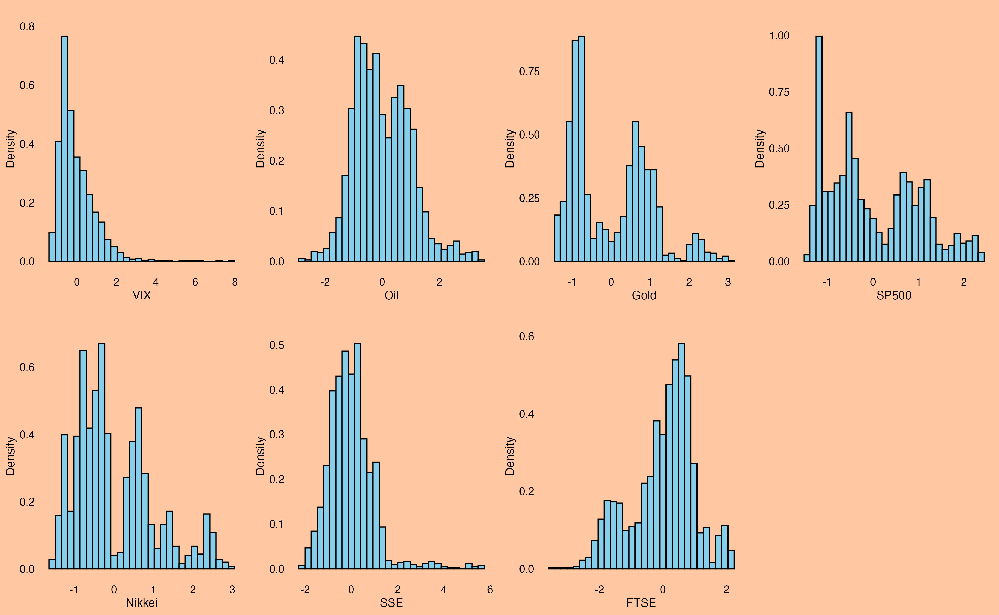Pairwise Scatter Plots
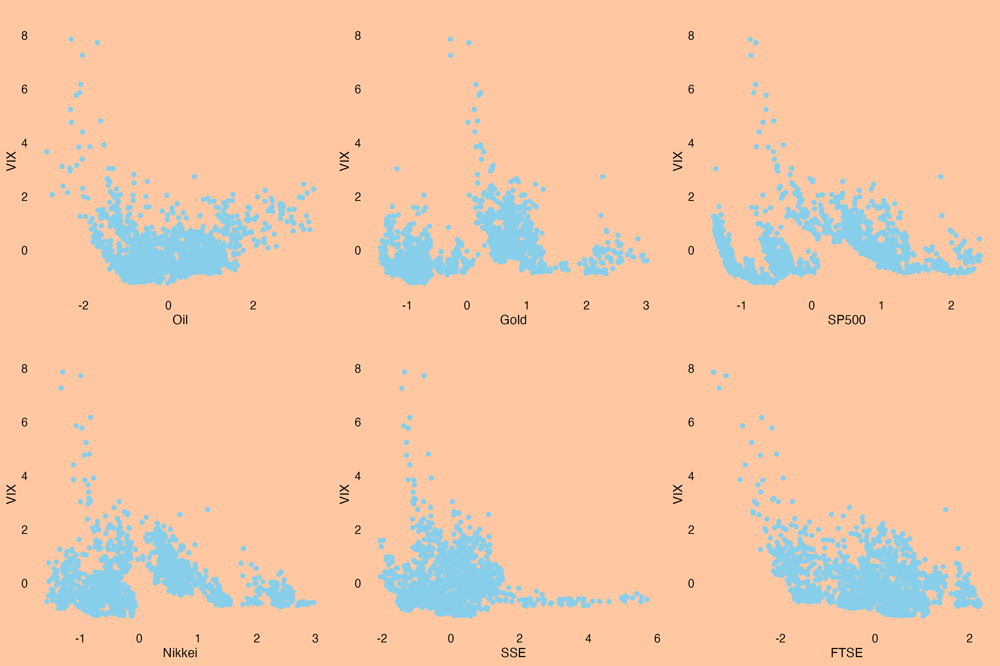Topic 2: Kernel Density Estimation
One-dimensional Kernel Density Estimation - Kernel Choices
Let \(X_1,...,X_n\) be a random sample from a population with continuous pdf f. The kernel density estimator of f is: \[\widehat{f}_h(x) = \frac{1}{nh}\sum_{i=1}^nK\left(\frac{x-X_i}{h}\right)\] where \(K(\cdot)\) is the kernel function and h is the bandwidth.
Kernel Choices
Gaussian Kernel 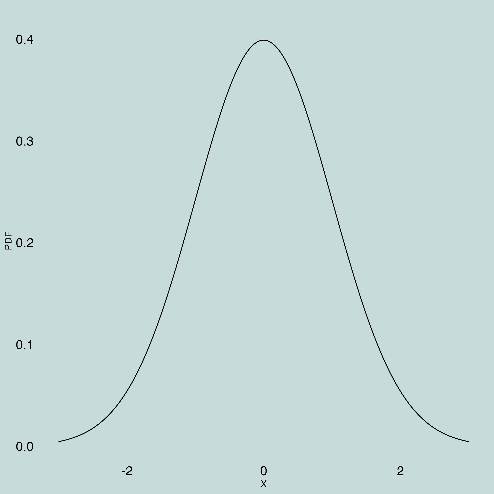
Epanechnikov Kernel 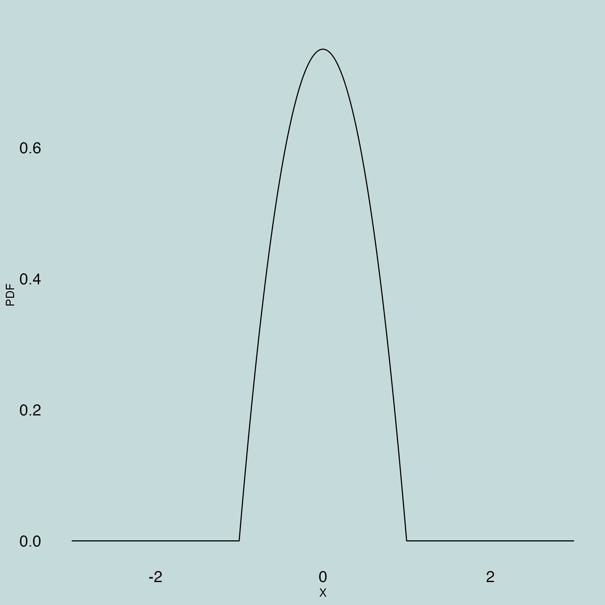
Uniform Kernel 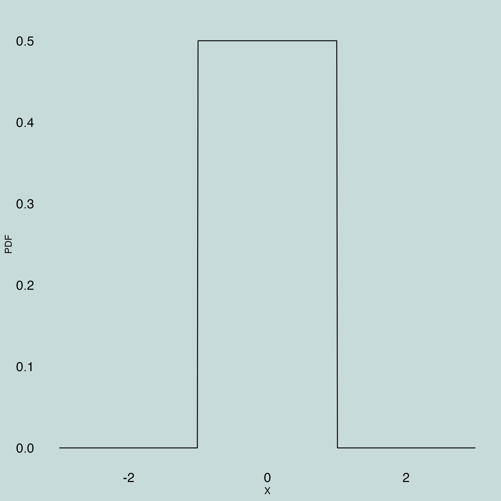
One-dimensional Kernel Density Estimation - Kernel Choices (Cont’d)
VIX Index 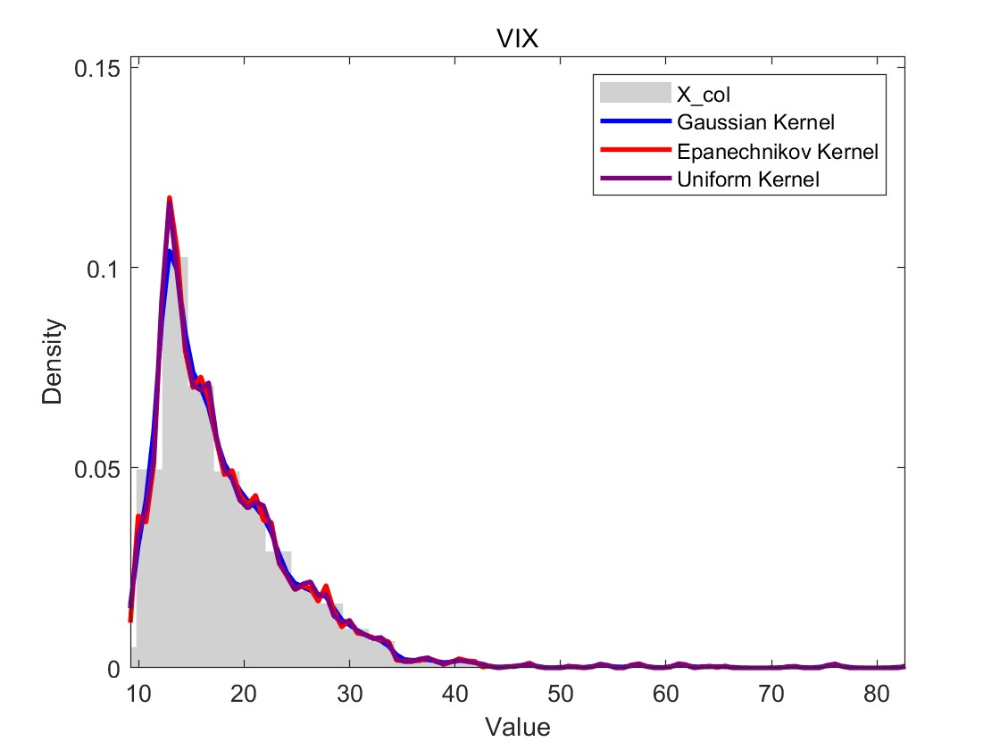
Oil 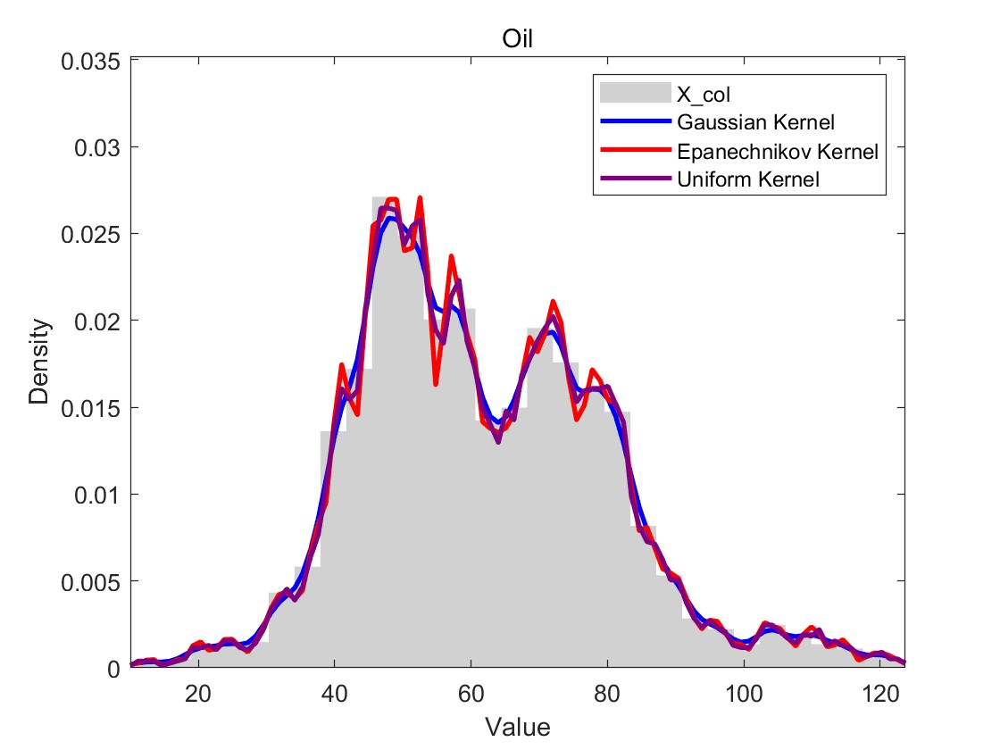
Gold 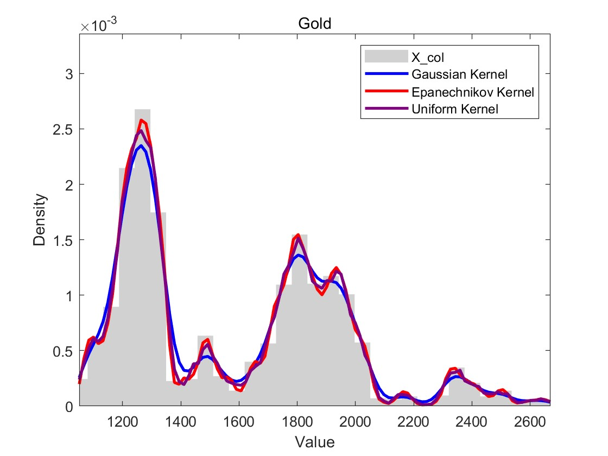
S&P500 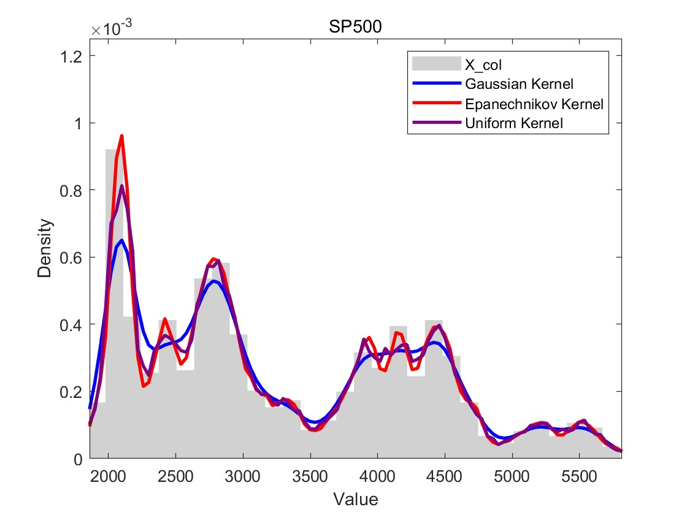
Nikkei Index 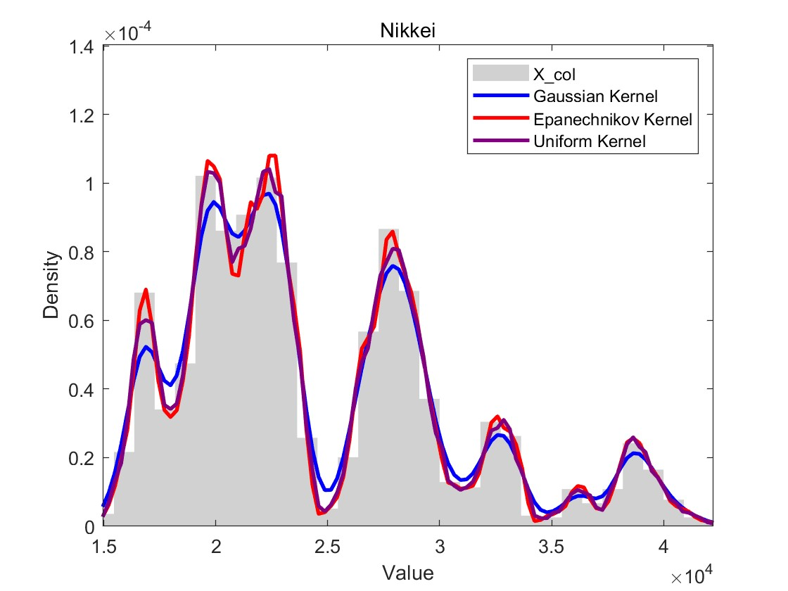
SSE Index 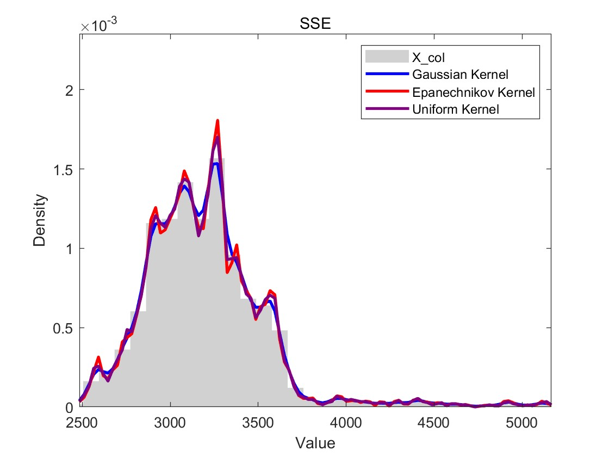
FTSE 100 Index 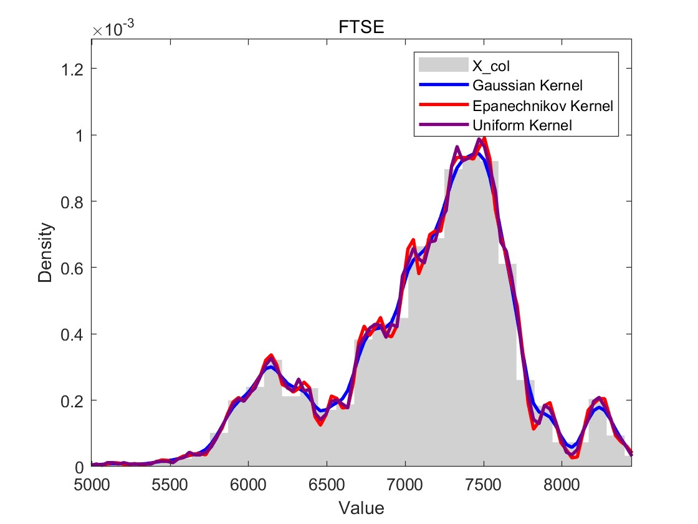
One-dimensional Kernel Density Estimation - Bandwidth Selection
Method 1: Selected optimal bandwidths based on AMISE
The optimal bandwidths for kernel density estimators can be selected based on asymptotic mean integrated square error (AMISE) where
\[AMISE\{\widehat{f}_h(x)\} = \frac{5}{4}n^{-\frac{4}{5}}\{R(f'')\}^{\frac{2}{5}}\{R(K)\}^{\frac{4}{5}}\{\mu_2(K)\}^{\frac{2}{5}}\] the optimal bandwidth that minimized the AMISE is: \[h_{opt} = \left[\frac{R(K)}{n\color{#AA3A39}{R(f'')}{\mu_2(K)}^2}\right]^{\frac{1}{5}}\] Problem: we need to estimate \(f''\)
Solution: Rule of Thumb
Estimate \(R(f'')\) parametrically by assuming that f is close to a Gaussian density function.
Gaussian: \(\widehat{h}_{rot} = \left(\frac{1}{4\pi}\right)^{\frac{1}{10}}\left(\frac{3}{8\sqrt{\pi}}\right)^{-\frac{1}{5}}\widehat{\sigma} n^{-\frac{1}{5}}\approx 1.06\widehat{\sigma} n^{-\frac{1}{5}}\)
Epanechnikov: \(\widehat{h}_{rot} = \left(\frac{5\widehat{\sigma}^5}{n}\right)\approx 2.34\widehat{\sigma} n^{-\frac{1}{5}}\)
Uniform: \(\widehat{h}_{rot} = \left(\frac{3\widehat{\sigma}^5}{n}\right) \approx 2.77\widehat{\sigma} n^{-\frac{1}{5}}\)
Method 2: Select optimal bandwidths based on ISE
The optimal bandwidths for kernel density estimators can be selected based on the integrated squared error (ISE) where
\[ISE(\widehat{f}_h) = \int_{-\infty}^{\infty} \left\{\widehat{f}_h(x) - f(x)\right\}^2dx = \int_{-\infty}^{\infty} \left\{\widehat{f}_{h}(x)\right\}^2dx - \color{#AA3A39}{2\int_{-\infty}^{\infty} \widehat{f}_h(x)f(x)dx} + \int_{-\infty}^{\infty} \left\{f(x)\right\}^2dx\]
Problem:
\(-2\int_{-\infty}^{\infty} \widehat{f}_h(x)f(x)dx = -2E\{g(X)\}|_{g=\widehat{f}_{h}}\) depends on \(h\) and involves unknown quantity f.
Solution: Least Squares Cross-validation
Find \(h_{LSCV}\) that minimizes: \[LSCV(h) = \int_{-\infty}^{\infty} \left\{\widehat{f}_{h}(x)\right\}^2dx - \frac{2}{n} \sum_{i=1}^n \widehat{f}_{h,-i}(X_i) \\
=\frac{1}{n^2h}\sum_{i=1}^n\sum_{j=1}^nK_{(2)}\left(\frac{X_i - X_j}{h}\right) - \frac{2}{n(n-1)h}\sum_{i=1}^n\sum_{j\neq i}K\left(\frac{X_i - X_j}{h}\right)\] \(h_{LSCV}\) is asymptotically optimal
One-dimensional Kernel Density Estimation - Bandwidth Selection (Cont’d)
| Asset | Gaussian \(h_{opt}\) | Epanechnikov \(h_{opt}\) | Uniform \(h_{opt}\) |
|---|---|---|---|
| VIX | 1.38 | 3.05 | 3.61 |
| Oil | 4.17 | 9.20 | 10.89 |
| Gold | 82.91 | 183.03 | 216.66 |
| SP&500 | 233.63 | 515.76 | 610.53 |
| Nikkei | 1366.00 | 3015.40 | 3569.50 |
| SSE | 66.32 | 146.40 | 173.31 |
| FTSE | 123.26 | 272.10 | 322.10 |
| Asset | Gaussian \(h_{LSCV}\) | Epanechnikov \(h_{LSCV}\) | Uniform \(h_{LSCV}\) |
|---|---|---|---|
| VIX | 1.60 | 1.88 | 2.22 |
| Oil | 8.33 | 4.60 | 5.44 |
| Gold | 41.46 | 91.51 | 108.33 |
| SP500 | 116.82 | 257.88 | 305.27 |
| Nikkei | 682.98 | 1507.70 | 1784.80 |
| SSE | 158.37 | 87.40 | 103.46 |
| {‘FTSE’} | 164.79 | 150.56 | 178.23 |
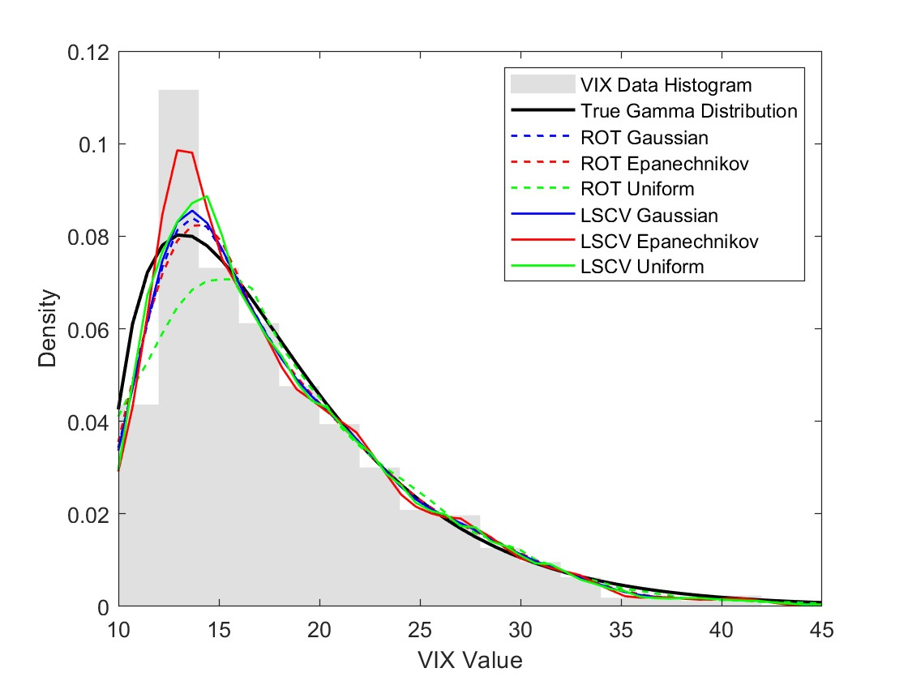
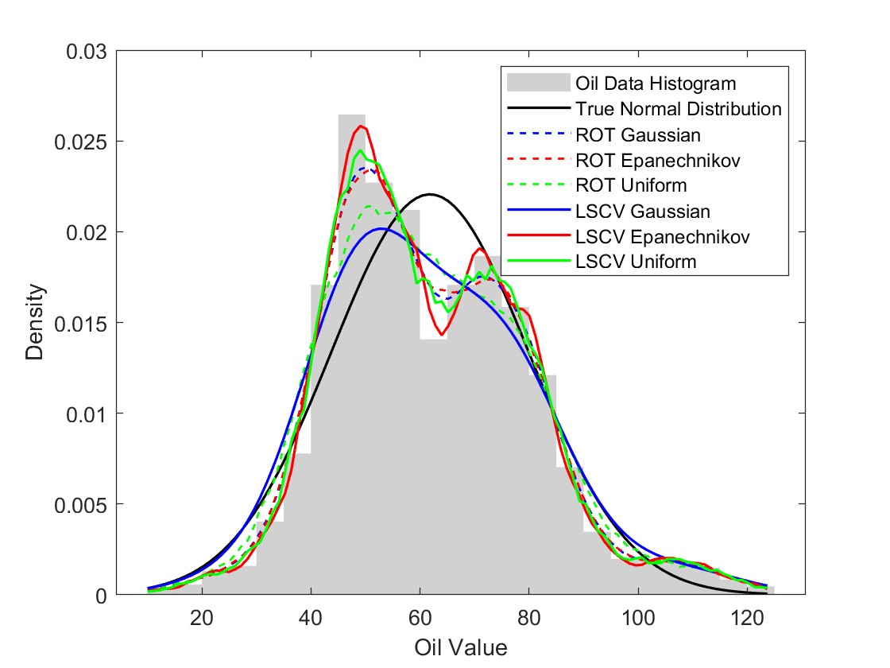
One-dimensional Kernel Density Estimation - Boundary Bias
Problem: When we use the kernel density estimator \(\widehat{f}_{h}{(x)}\) to estimate \(f(x)\), the support set of the estimator can be different from that of \(f(x)\).
Specifically, the bias of our estimator \(\widehat{f}_{h}{(x)}\) at \(x = ph\) with \(0 \leq p < 1\) is: \[Bias\left\{\widehat{f}_{h}{(x)}\right\} = \{a_0(p) - 1\}f(x) - ha_1(p)f'(x)+\frac{1}{2}h^2a_2(p)f''(x)+o(h^2)\] where \(a_l(p) = \int_{-\infty}^pu^lK(u)du\)
Solution 1: Normalization We normalize \(\widehat{f}_{h}{(x)}\) by dividing by \(a_0(p)\) so that: \[\tilde{f_h}(x) = \frac{\widehat{f}_{h}(x)}{a_0(p)}\] and \[Bias\left\{\tilde{f_h}{(x)}\right\} = - h\frac{a_1(p)}{a_0(p)}f'(x)+\frac{1}{2}h^2\frac{a_2(p)}{a_0(p)}f''(x)+o(h^2) \rightarrow 0\] Note:
The bias has rate \(h\) instead of \(h^2\), meaning that the convergence at boundary is much slower.
Solution 2: Boundary Kernels Suppose we have two kernel functions \(L(\cdot)\) and \(K(\cdot)\), we know that \[ E\{c_1(p)\widehat{f}_{K,h}{(x)}\} = c_1(p)a_0(p)f(x) - ha_1(p)c_1(p)f'(x)+O(h^2) \\ E\{a_1(p)\widehat{f}_{L,h}{(x)}\} = a_1(p)c_0(p)f(x) - ha_1(p)c_1(p)f'(x)+O(h^2) \\ \] we define a new kernel \(B(\cdot)\) at the boundary: \[B(u) = \frac{c_1(p)K(u) - a_1(p)L(u)}{c_1(p)a_0(p) - a_1(p)c_0(p)}\] The new estimator \(\widehat{f}_{B,h}{(x)}\) satisfies: \[E{\widehat{f}_{B,h}{(x)}} = f(x) + O(h^2)\]
Solution 3: Log - Transformation We estimate a kernel density estimator \(\widehat{g}(\cdot)\) based on the log transformed data and the estimator for the original variable y is \[\widehat{f}(x) = \frac{\widehat{g}(log(x))}{x}\] Note: If x is near 0 at the boundary, then the result will be very unstable.
Solution 4: Reflected Method We use a new estimator \[\widehat{f}(x) = \frac{1}{nh}\left[ K\left( \frac{x+X_i}{h}\right) + K\left( \frac{x-X_i}{h}\right)\right]\] to estimate the density at the boundary.
Essentially, we are reflecting the kernel at the boundary.
One-dimensional Kernel Density Estimation - Boundary Bias (Cont’d)
We use Epanechnikov kernel and \(h_{RoT}\) to illustrate the effect of different boundary bias correction methods
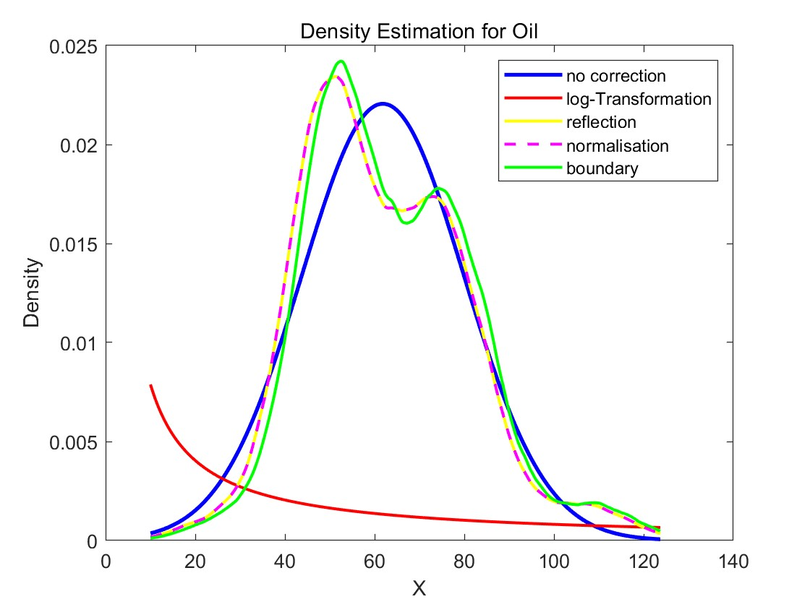
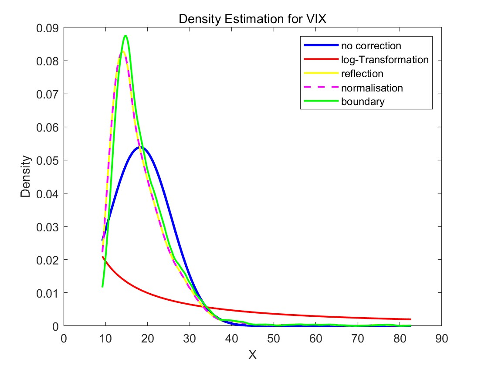
Two-dimensional Kernel Density Estimation
If \(X \in \mathbb{R}^2\), then the two dementional kernel density estimator of \(f(x)\) is:
\[\widehat{f}_h(x) \ = \frac{1}{n}\sum_{i=1}^n \frac{1}{h_1 h_2}K\left( \frac{x-X_1}{h_1}, \frac{x-X_2}{h_12}\right)\]
More generally, we use a non-singular matrix \(H\) as the bandwidth matrix, then
\[ \widehat{f}_h(x) \ = \frac{1}{n}\sum_{i=1}^n \frac{1}{det(\mathbf{H})}\mathscr{K}\{\mathbf{H}^{-1}(\mathbf{x} - \mathbf{X_i})\} \]
Fitted Density Plot - Oil v.s Gold
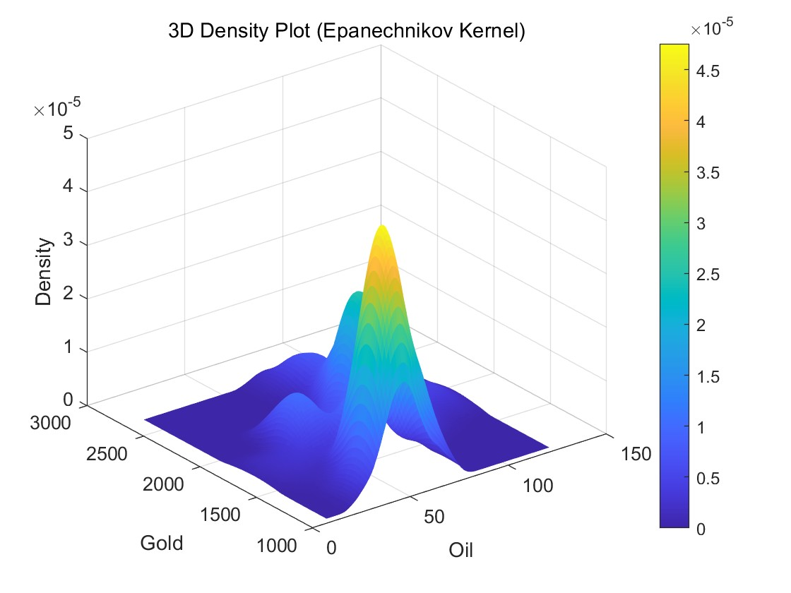
Fitted Density Plot - Gold v.s VIX
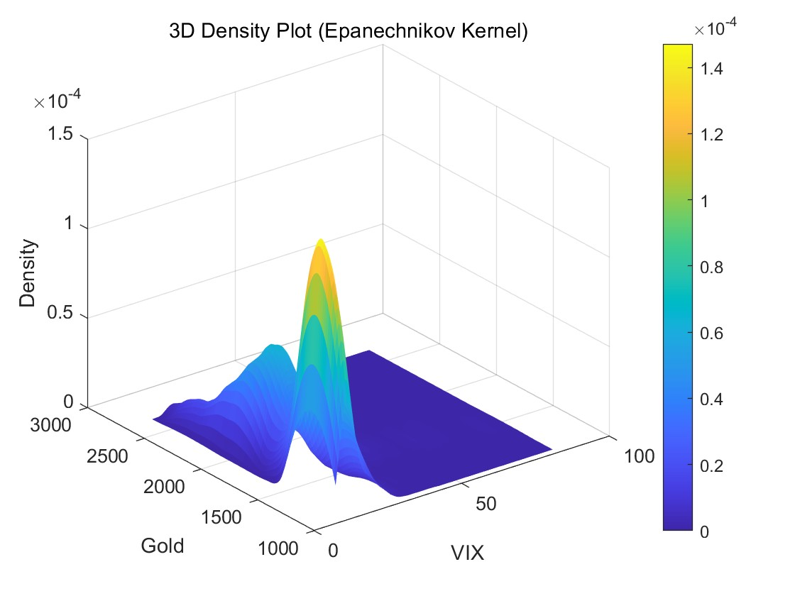
Fitted Density Plot - Oil v.s Gold
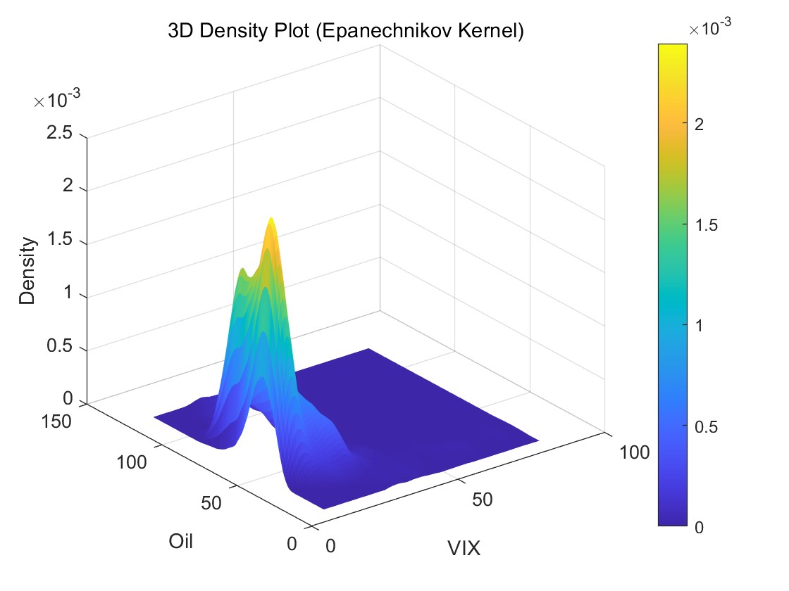
Fitted Density Plot - S&P500 v.s VIX
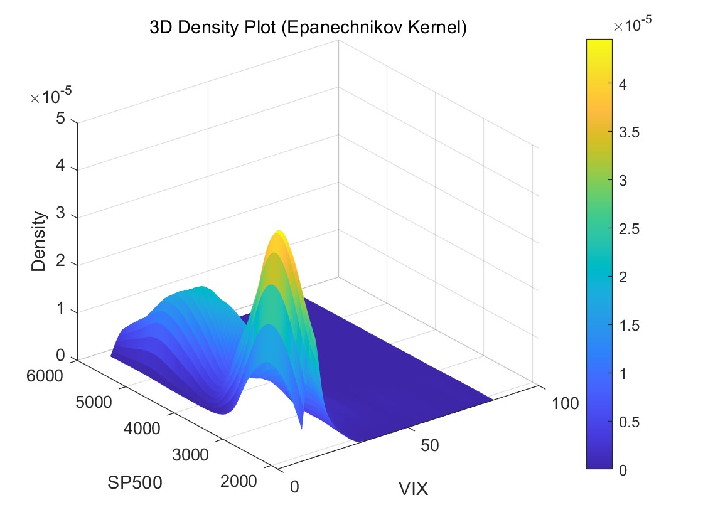
Topic 3: Kernel Regression
Scaling Data
For our regression analysis, we scale the data by standardizing the data so that the distance calculation are consistent across the covariates. 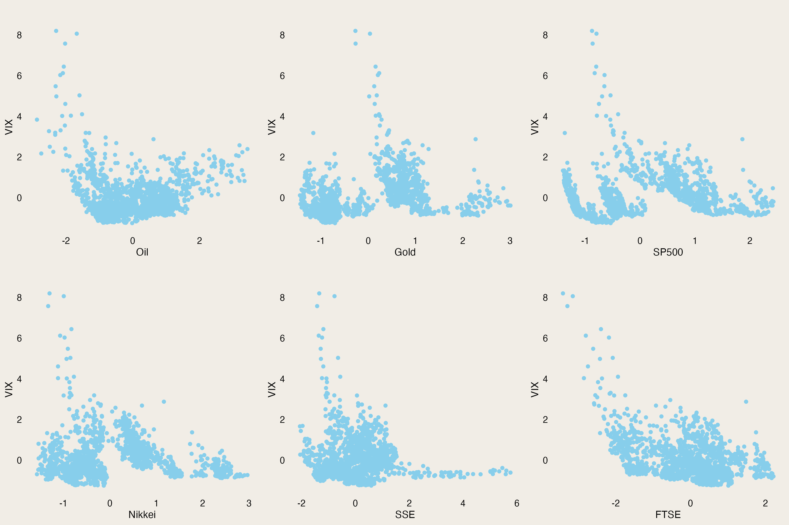
Local Constant and Local Linear Kernel Regression
We model the data non-parametrically as: \[Y_i = m(\mathbf{X_i}) + \epsilon_i\]
In a local constant estimator , the estimator \(\widehat{m}_{h}(x)\) is defined as:
\[\widehat{m}_{h}(x) = \frac{\sum_{i=1}^nK\left(\frac{x-X_i}{h}\right)Y_i}{K\left(\frac{x-X_i}{h}\right)}\]
In a local linear estimator , the estimator \(\widehat{m}_{h}(x)\) is defined as:
\[\widehat{m}_{1,h}(x) = \frac{S_{2,h}(x)T_{0,h}(x) - S_{1,h}(x)T_{1,h}(x)}{S_{0,h}(x)S_{2,h}(x)- S^2_{1,h}(x)} \qquad \]
where \[\widehat{\beta}(x)= \begin{pmatrix} S_{0,h}(x) & S_{1,h}(x) \\ S_{1,h}(x) & S_{2,h}(x) \end{pmatrix}^{-1} \begin{pmatrix} T_{0,h}(x) \\ T_{1,h}(x) \end{pmatrix} \qquad S_{j,h}(x) = \sum_{i=1}^n K_h(x-X_i)(X_i-x)^j \qquad T_{j,h}(x) = \sum_{i=1}^n K_h(x-X_i)(X_i-x)^jY_i \]
One Dimensional Kernel Regression
Local Constant Regression with Epanechnikov Kernel 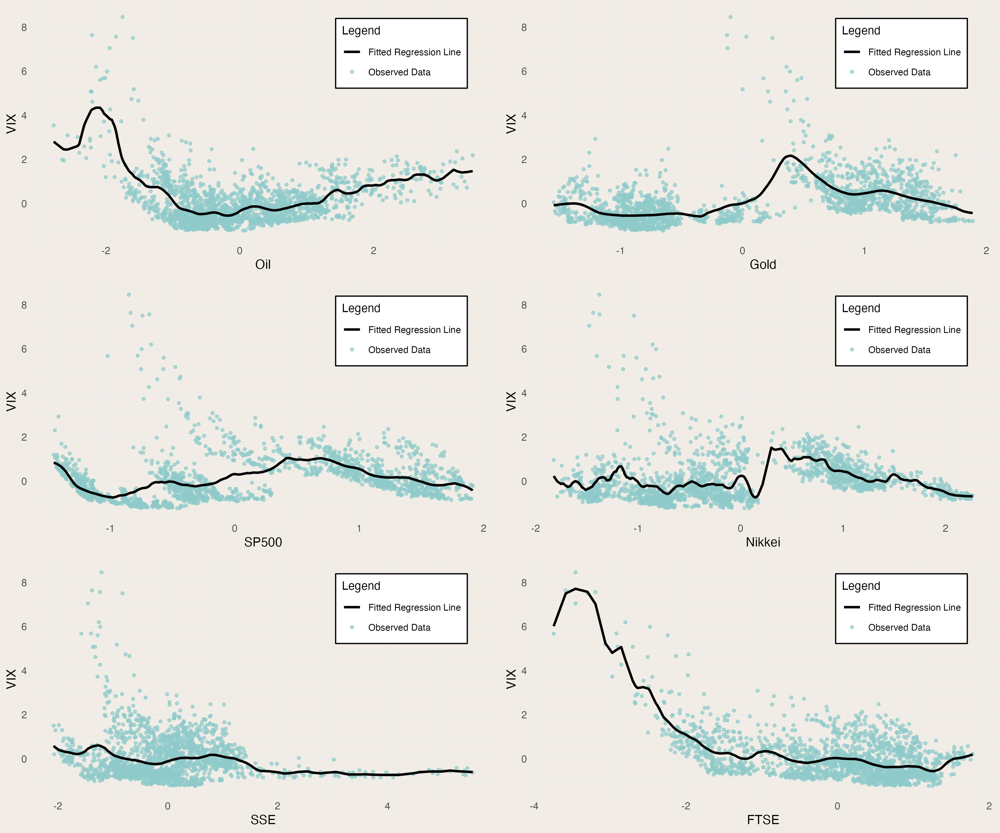
Local Linear Regression with Epanechnikov Kernel 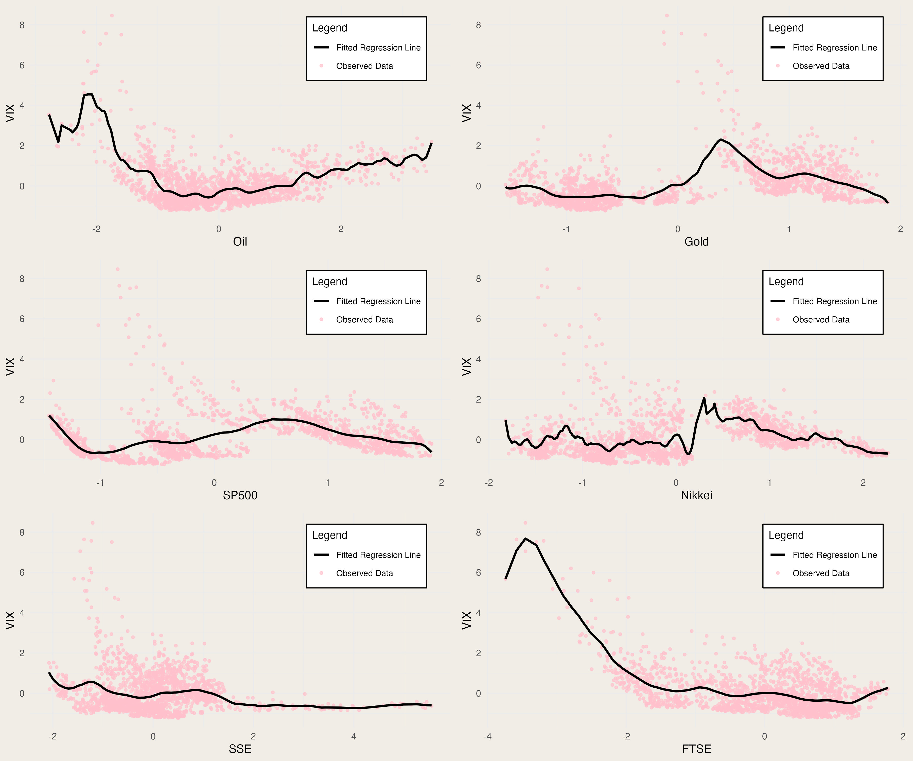
Bandwidth selected by cross validation, minimizing the weighted average residual sum of squares
| Model | adjusted \(R^2\) | X Range | Bandwidth | Bandwidth % of X Range |
|---|---|---|---|---|
| VIX ~ S&P500 | 0.2952 | -1.41 - 2.47 | 0.0093 | 0.24% |
| VIX ~ Oil | 0.4823 | -2.87 - 3.42 | 0.0848 | 1.35% |
| VIX ~ Gold | 0.4330 | -1.45 - 3.01 | 0.0195 | 0.44% |
| VIX ~ Nikkei | 0.2022 | -1.60 - 2.97 | 0.025 | 0.55% |
| VIX ~ SSE | 0.0593 | -2.06 - 5.70 | 0.0932 | 1.20% |
| VIX ~ FTSE | 0.4833 | -3.57 - 2.23 | 0.0716 | 1.24% |
Bandwidth selected by cross validation, minimizing the weighted average residual sum of squares
| Model | adjusted \(R^2\) | X Range | Bandwidth | Bandwidth % of X Range |
|---|---|---|---|---|
| VIX ~ S&P500 | 0.2147 | -1.41 - 2.47 | 0.0834 | 2.15% |
| VIX ~ Oil | 0.4824 | -2.87 - 3.42 | 0.0237 | 1.48% |
| VIX ~ Gold | 0.4269 | -1.45 - 3.01 | 0.0195 | 0.53% |
| VIX ~ Nikkei | 0.1849 | -1.60 - 2.97 | 0.0527 | 1.15% |
| VIX ~ SSE | 0.0550 | -2.06 - 5.70 | 0.0799 | 1.84% |
| VIX ~ FTSE | 0.4821 | -3.57 - 2.23 | 0.0716 | 1.38% |
Multi Dimensional Kernel Regression
| Model | Oil | Gold | S&P500 | Nikkei | SSE | FTSE |
|---|---|---|---|---|---|---|
| Bandwidth | 0.13 | 0.11 | 0.08 | 0.24 | 0.19 | 0.19 |
| Bandwidth % of X Range | 0.02 | 0.02 | 0.02 | 0.05 | 0.02 | 0.03 |
| Adjusted \(R^2\) | 0.9660 | Training MSE | 0.0319 | Testing MSE | 0.4534 |
| Model | Oil | Gold | S&P500 | Nikkei | SSE | FTSE |
|---|---|---|---|---|---|---|
| Bandwidth | 0.25 | 0.48 | 0.20 | 0.19 | 0.34 | 0.35 |
| Bandwidth % of X Range | 0.04 | 0.12 | 0.05 | 0.04 | 0.04 | 0.06 |
| Adjusted \(R^2\) | 0.9529 | Training MSE | 0.0452 | Testing MSE | 0.4534 |
Fitted v.s observed values - Local Constant Estimator 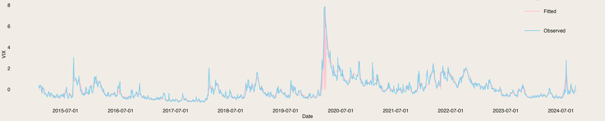
Fitted v.s observed values - Local Linear Estimator 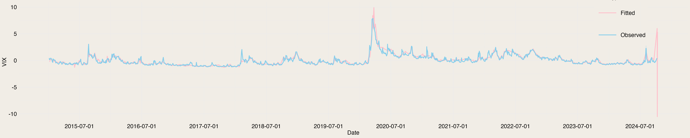
Multi Dimensional Kernel Regression (Cont’d)
| Model | Training MSE | Testing MSE |
|---|---|---|
| VIX ~ Oil + Gold + SP500 + Nikkei + SSE + FTSE | 0.0303 | 0.4049 |
| VIX ~ Gold + SP500 + Nikkei + SSE + FTSE | 0.0333 | 0.2595 |
| VIX ~ Oil + SP500 + Nikkei + SSE + FTSE | 0.0430 | 0.2242 |
| VIX ~ Oil + Gold + Nikkei + SSE + FTSE | 0.0332 | 0.2097 |
| VIX ~ Oil + Gold + SP500 + SSE + FTSE | 0.0335 | 0.2185 |
| VIX ~ Oil + Gold + SP500 + Nikkei + SSE | 0.0427 | 0.2273 |
| Model | Training MSE | Testing MSE |
|---|---|---|
| VIX ~ Oil + Gold + SP500 + Nikkei + SSE + FTSE | 0.0592 | 0.2330 |
| VIX ~ Gold + SP500 + Nikkei + SSE + FTSE | 0.0402 | 65.2433 |
| VIX ~ Oil + SP500 + Nikkei + SSE + FTSE | 0.0679 | 59.7825 |
| VIX ~ Oil + Gold + Nikkei + SSE + FTSE | 0.0568 | 115.7836 |
| VIX ~ Oil + Gold + SP500 + SSE + FTSE | 0.0538 | 92.8924 |
| VIX ~ Oil + Gold + SP500 + Nikkei + SSE | 0.0453 | 6511.29 |
Local Constant Estimator
Oil 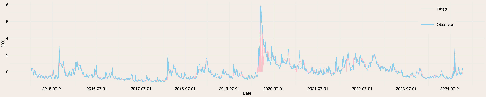
Gold 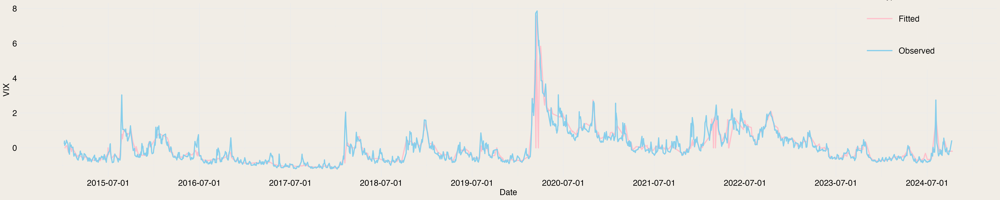
SP500 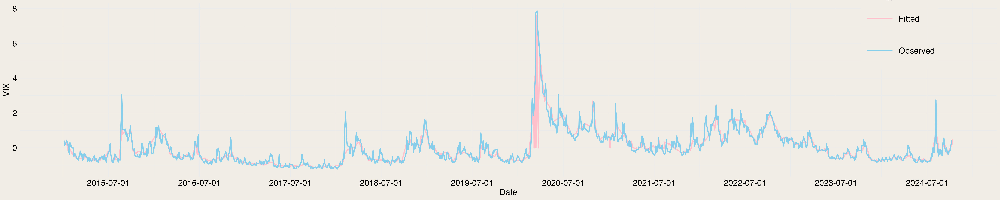
Nikkei
SSE
FTSE
Local Linear Estimator
Oil 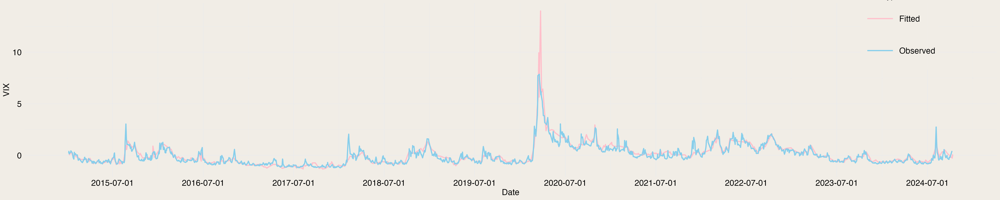
Gold 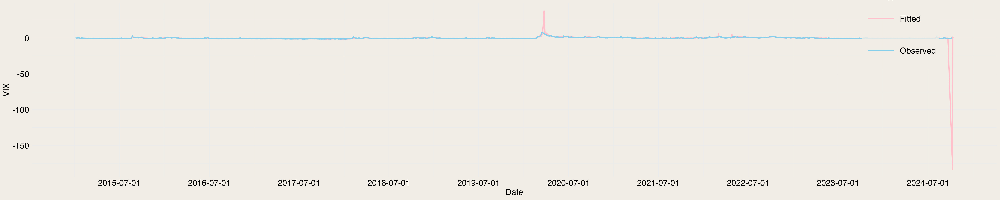
S&P500 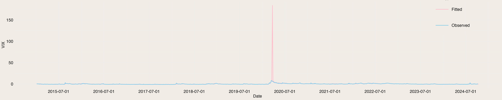
Nikkei 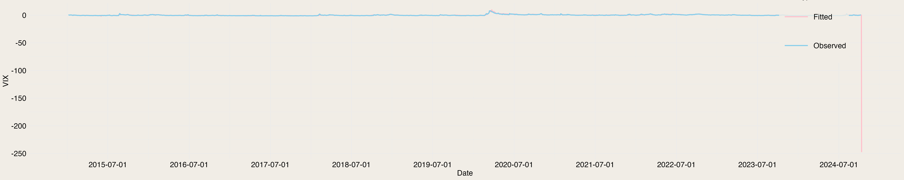
SSE 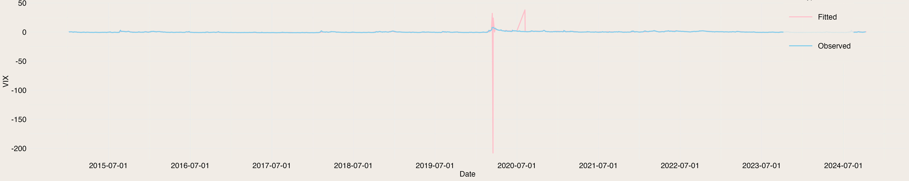
FTSE 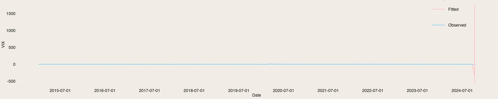
Multi Dimensional Kernel Regression (Continued)
| Model | Training MSE | Testing MSE |
|---|---|---|
| VIX ~ Gold + Nikkei + SSE + FTSE | 0.0484 | 0.2351 |
| VIX ~ Oil + Nikkei + SSE + FTSE | 0.0553 | 0.1644 |
| VIX ~ Oil + Gold + SSE + FTSE | 0.0574 | 0.2274 |
| VIX ~ Oil + Gold + Nikkei + FTSE | 0.0462 | 0.2278 |
| VIX ~ Oil + Gold + Nikkei + SSE | 0.0487 | 0.2404 |
| Model | Training MSE | Testing MSE |
|---|---|---|
| VIX ~ SP500 + Nikkei + SSE + FTSE | 0.0645 | 0.8281 |
| VIX ~ Gold + Nikkei + SSE + FTSE | 0.0580 | 59.6278 |
| VIX ~ Gold + SP500 + SSE + FTSE | 0.0679 | 59.7825 |
| VIX ~ Gold + SP500 + Nikkei + FTSE | 0.0592 | 0.1604 |
| Gold + SP500 + Nikkei + SSE | 0.3247 | 0.7403 |
Local Constant Estimator - Excluding Gold 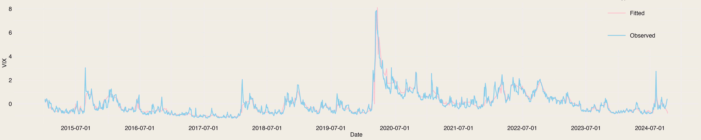
Local Linear Estimator - Excluding SSE 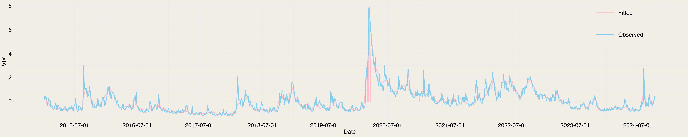
Topic 4: Regression Splines
Regression Spline
The regression spline estimator of \(m(x)\) is defined as: \[\widehat{m}_L(x) = B^T(x)\widehat{\beta} = B^T(x)(B^TB)^{-1}B^TY\] where \[\mathbf{B}(x) = \begin{pmatrix} B_{-d, d+1}(x) \\ \vdots \\ B_{L, d+1}(x)\end{pmatrix} \qquad \mathbf{B} = \begin{pmatrix} \mathbf{B}(X_1) \\ \vdots \\ \mathbf{B}(X_n)\end{pmatrix} \qquad \mathbf{\beta} = \begin{pmatrix} \beta_{-d} \\ \beta_{-d+1} \\ \vdots \\ \beta_L\end{pmatrix} \qquad \mathbf{Y} = \begin{pmatrix} Y_1 \\ Y_2 \\ \vdots \\ Y_n\end{pmatrix} \] d is the degree of the spline function, L is the number of knots used in the estimation and \(\mathbf{\beta}\) are the minimizers of s \[\sum_{i=1}^n\left\{ Y_i - \sum_{l=-d}^L\beta_l B_{l,d+1}(X_i)\right\}^2\]
Regression Spline
We use a regression spline to estimate the relationship between the VIX index and Oil prices
We sample 75% of the data without replacement as our training set and the rest 25% are used as testing set.
The optimal number of knots is selected using leave-one-out cross validation defined as: \[CV(L) = \frac{1}{n}\sum_{i=1}^n(\{\mathbf{I}_n - diag(\Omega_n)\}_{ii}\{Y_i - \widehat{m}_L\}^2w(X_i)\] with \(w(\cdot)\) as the indicator function checking if \(X_i\) falls within the middle 90% of the data.
Training MSE: 0.4832
Testing MSE: 0.6680
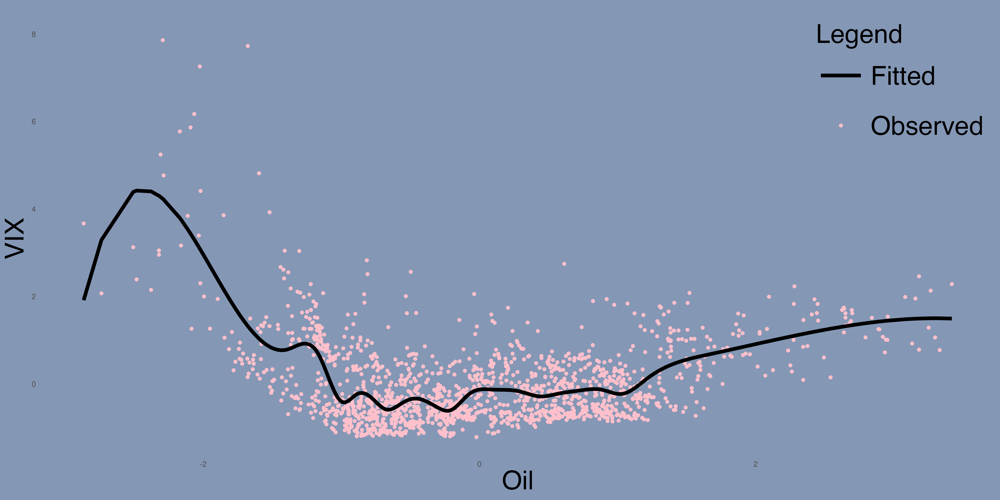
Training MSE: 0.4803
Testing MSE: 0.6686
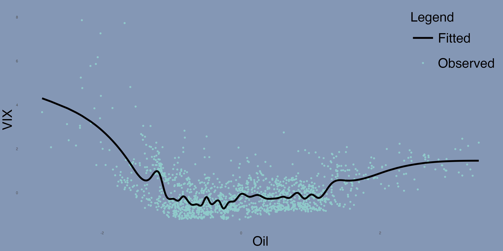
Penalized Regression Spline
The penalized regression spline estimator of \(m(x)\) is defined as: \[\widehat{m}_{\lambda}(x) = \mathbf{B}(x)(\mathbf{B}^T\mathbf{B}+\lambda \mathbf{D}_q)^{-1}\mathbf{B}^TY\] where \[D_q = \int_a^b\mathbf{B}^{(q)}(x)\{\mathbf{B}^{(q)}(x)\}^Tdx\] The penalized spline regression estimator minimizes the following equation with respect to \(s \in S_d(t)\) \[\sum_{i=1}^n\{Y_i-s(X_i)\}^2 + \lambda \int_a^b\{s^{(q)}(x)\}^2dx\] The penalized regression spline balances the trade-off between fitting the observed data closely and maintaining smoothness by penalizing excessive curvature.
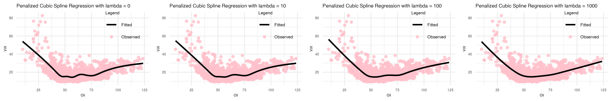Tensor Product Spline
The tensor product regression spline estimator of \(m(x)\) is defined as:
\[\widehat{m}(\mathbf{x}) = \{B_{[r]}(x)\}^T\hat{c} = \{B_{[r]}(\mathbf{x})\}^T(\mathbf{X}^T\mathbf{X})^{-1}\mathbf{X}^T\mathbf{Y}\] where \[B_{[r]}(\mathbf{x}) = \otimes_{j=1}^rB_j(x_j) \qquad \mathbf{X} = \begin{pmatrix} B_{[r]}(\mathbf{X_1}) \\ B_{[r]}(\mathbf{X_2}) \\ \vdots \\ B_{[r]}(\mathbf{X_n}) \end{pmatrix}\]
| Model | Training MSE | Testing MSE |
|---|---|---|
| VIX ~ Oil + Gold + S&P500 + Nikkei + SSE + FTSE | 0.0155 | 3.3467 |
| VIX ~ Oil + S&P500 + Nikkei + SSE + FTSE | 0.0568 | 0.1474 |
| VIX ~ Oil + S&P500 + Nekkei + FTSE | 0.1362 | 0.2620 |
| VIX ~ S&P500 + Nikkei + FTSE | 0.2130 | 0.2753 |
| VIX ~ S&P500 + Nikkei | 0.3257 | 0.7293 |
| VIX ~ S&P500 + Oil | 0.4247 | 0.6335 |